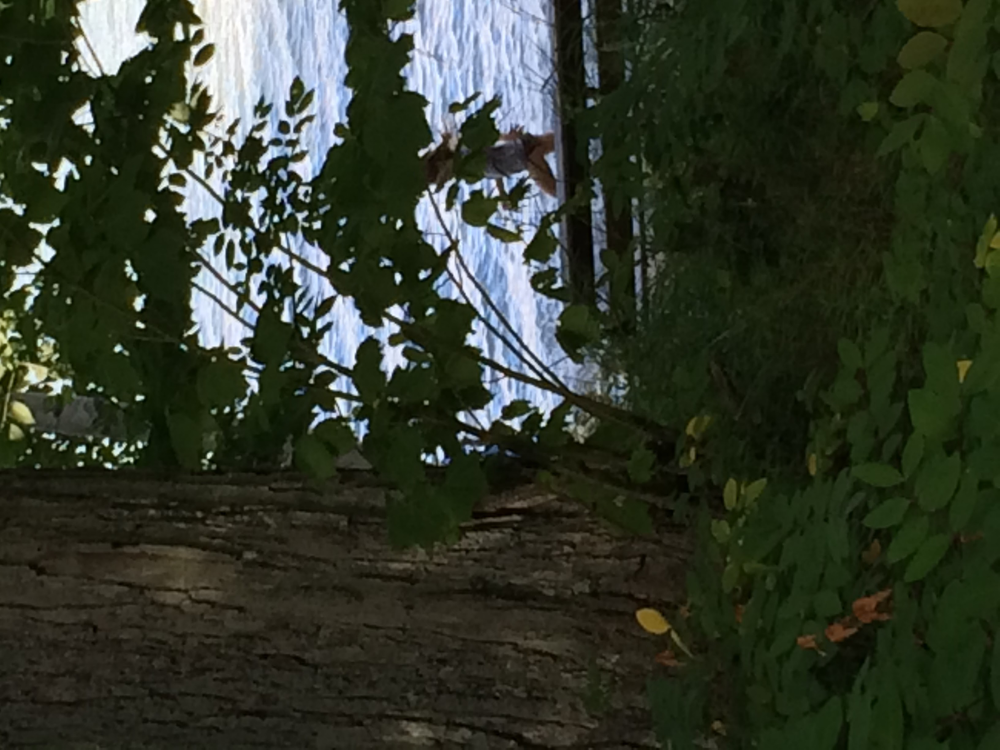

Exploring Michigan Parks
Michigan has many beautiful parks, lakes and wooded areas that are great places to explore.





Michigan has many beautiful parks, lakes and wooded areas that are great places to explore.
